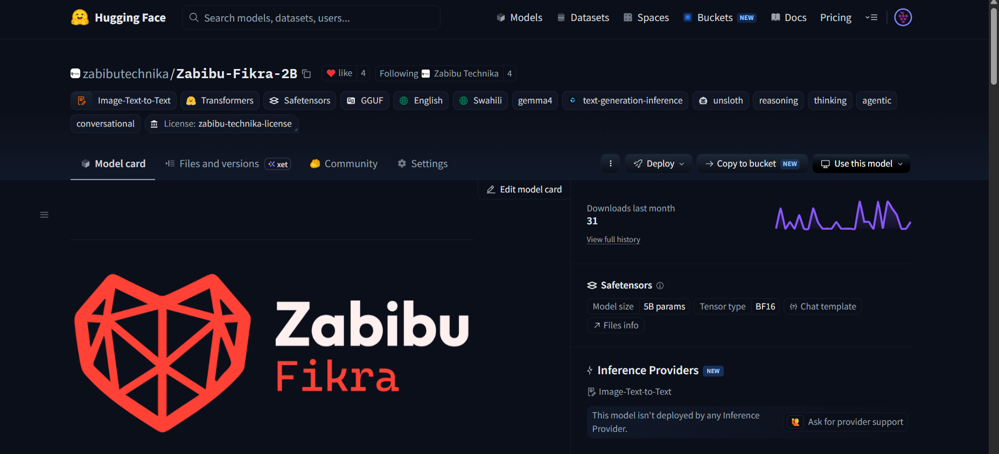

Reasoning that commits
Thinking mode, action-oriented extraction, and a low-temperature operating range. Tuned to decide, not to ramble.
ZABIBU FIKRA · MODEL 01 · 2B
An ultra-efficient, reasoning-optimized model built on Gemma-4-2B-it and tuned for Pan-African contexts, business agility, and high-density English–Swahili code-switching. It runs on the machine in front of you.
The model that exists
Zabibu Fikra Model 1 – 2B is an ultra-efficient, reasoning-optimized model built on the Gemma-4-2B-it architecture. It was conceptualized, built, and deployed by a solo developer in East Africa, then tuned for Pan-African contexts, business agility, and high-density English–Swahili code-switching.
The model card calls its approach action-oriented cognitive extraction. Every instruction is treated as an execution task, not a prompt for polite filler. It is a 2B-class model that runs on the hardware people actually have — local, private, and offline when the network is not there.
“Deterministic action over verbose guesswork.” From the Fikra model card
It is not trying to win a benchmark for general knowledge. It is trying to be the model you can keep: a small, sharp reasoning engine for business workflows, local agents, and software that has to work from Nairobi to the next town without a reliable connection.
License: evaluation and non-production use until 14 June 2030; Apache 2.0 from that date. Production use requires written permission. Talk to us about production · Read the license.

What it does
Thinking mode, action-oriented extraction, and a low-temperature operating range. Tuned to decide, not to ramble.
English and Swahili, with high-density dialect switching. Built for Pan-African business contexts, not translated after the fact.
The ChatML template carries tool-call and thinking channels. It drops into Arif Agent and Weaver without a translation layer.
A 2B-class footprint and a Q4_K_M GGUF that fits consumer hardware. No data center, no API key, no queue.
Runs locally, offline, and under your control. The system prompt is explicit: the model belongs to Zabibu Technika, not an external platform.
Recommended inference is 0.15–0.2 temperature, top_p 0.95, and repeat penalty 1.15. The defaults are in the card, not guessed.
Run it
# pull the 4-bit quant and run it ollama run hf.co/zabibutechnika/Zabibu-Fikra-2B:Q4_K_M
# or download the file directly huggingface-cli download zabibutechnika/Zabibu-Fikra-2B \ zabibu-fikra-Q4_K_M.gguf
Q4_K_M fits consumer hardware. F16 GGUF and BF16 weights are in the repository. Community quants are available from mradermacher.
Faster. Better. Native vision. Built deeper into the Zabibu Technika stack. The first model proved a 2B-class model can reason, switch languages, and run locally. The second is built to make that feel inevitable.
Lower latency, higher throughput, and a smaller memory bill. Built for the local loop, not a queue.
Stronger reasoning, cleaner code-switching, fewer regressions. Trained against the failure modes of Model 01.
Native image understanding: documents, screenshots, interfaces, and the physical world. A first-class input, not a bolt-on.
Trained around Arif Agent, Weaver, proof receipts, and the local stack. The model and the infrastructure ship together.
The runtime Fikra deserves. A proprietary, production-grade enterprise deployment layer purpose-built to handle Fikra models with maximum efficiency, resilient agentic workflows, and absolute local data sovereignty.
Quantization-aware scheduling, memory reuse, and a runtime tuned to Fikra's token layout. Less overhead between the model and the work.
Long-running tool loops, checkpoints, retries, and receipts. A workflow that survives a dropped connection or a closed lid.
The model, the memory, and the data stay on your hardware. No telemetry, no hosted dependency, no silent egress.
Commercial availability to be announced. Enterprise previews will follow Fikra Model 2.